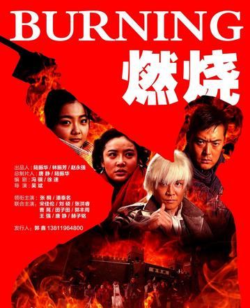

正常盒模型。先确定鞋子，盒子写成鞋子一样大就行，会扩充
鞋子鞋子鞋子鞋子鞋子鞋子鞋子鞋子鞋子鞋子鞋子鞋子鞋子鞋子鞋子鞋子鞋子鞋子鞋子鞋子鞋子鞋子鞋子鞋子鞋子鞋子鞋子鞋子鞋子鞋子鞋子
怪异和盒模型先确定盒子，在塞鞋子
怪异鞋子
column分栏
 于29日在江苏城市频道“第一剧场”热播的抗战剧《燃烧》，可是真的很“热血”。80后编剧大胆为该剧加入“海贼王”、“圣斗士星矢”等动漫元素， 让抗战英雄变身炫酷“全能”战斗士。这样靠谱吗，是否会变成雷剧?遭到该剧制片人唐静的质疑。 但编剧冯骥表示，在剧中加入动漫、热血这些元素，是为了满足 80、90后观众的现代审美，写得太土没人看!于29日在江苏城市频道“第一剧场”热播的抗战剧《燃烧》，可是真的很“热血”。80后编剧大胆为该剧加入“海贼王”、“圣斗士星矢”等动漫元素， 让抗战英雄变身炫酷“全能”战斗士。这样靠谱吗，是否会变成雷剧?遭到该剧制片人唐静的质疑。 但编剧冯骥表示，在剧中加入动漫、热血这些元素，是为了满足 80、90后观众的现代审美，写得太土没人看!于29日在江苏城市频道“第一剧场”热播的抗战剧《燃烧》，可是真的很“热血”。80后编剧大胆为该剧加入“海贼王”、“圣斗士星矢”等动漫元素， 让抗战英雄变身炫酷“全能”战斗士。这样靠谱吗，是否会变成雷剧?遭到该剧制片人唐静的质疑。 但编剧冯骥表示，在剧中加入动漫、热血这些元素，是为了满足 80、90后观众的现代审美，写得太土没人看!于29日在江苏城市频道“第一剧场”热播的抗战剧《燃烧》，可是真的很“热血”。80后编剧大胆为该剧加入“海贼王”、“圣斗士星矢”等动漫元素， 让抗战英雄变身炫酷“全能”战斗士。这样靠谱吗，是否会变成雷剧?遭到该剧制片人唐静的质疑。 但编剧冯骥表示，在剧中加入动漫、热血这些元素，是为了满足
旧版弹性盒子居中布局
排序 垂直分栏
第一个
第二个
第三个
水平分栏
1
2
3